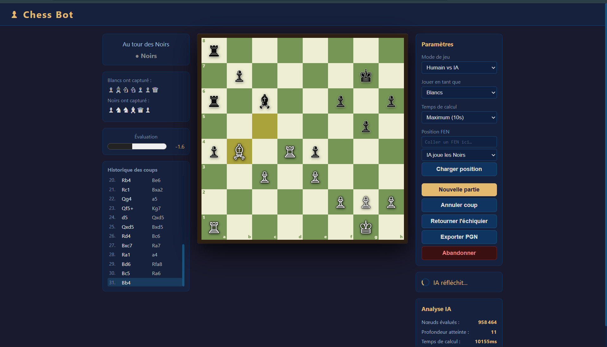

Présentation
Moteur d'échecs développé de zéro en JavaScript vanilla, jouable directement dans le navigateur. Le bot atteint un niveau estimé à ~2 500 Elo grâce à plusieurs optimisations algorithmiques avancées. Il est entièrement autonome et ne dépend d'aucune bibliothèque externe.
Algorithme — Negamax + optimisations
- Negamax — variante symétrique du Minimax, base de l'arbre de recherche
- Élagage Alpha-Bêta — élague les branches impossibles à améliorer, réduit l'espace de recherche de façon exponentielle
- Table de transposition (Zobrist hashing) — mémoïse les positions déjà évaluées pour éviter les recalculs
- Null Move Pruning — technique avancée qui suppose un coup "nul" pour couper des branches supplémentaires
- Late Move Reduction (LMR) — réduit la profondeur de recherche sur les coups probablement mauvais
- Livre d'ouvertures PGN — base de données d'ouvertures éprouvées pour les 10-15 premiers coups
Interface & technique
L'interface est entièrement rendue en JavaScript avec un plateau SVG interactif. Le moteur tourne dans un Web Worker dédié pour ne pas bloquer le thread principal — le jeu reste fluide même pendant les calculs profonds.
- Plateau interactif drag-and-drop pour les pièces
- Affichage des coups légaux au survol
- Exportation PGN
- Web Workers pour le calcul asynchrone